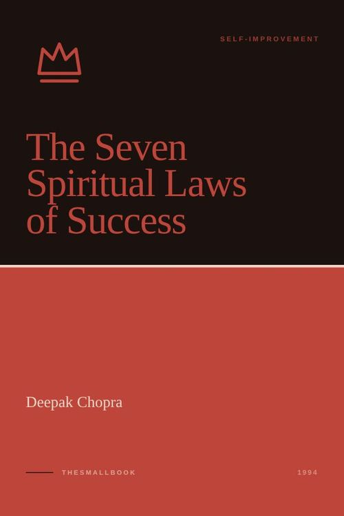

Library › Authors › Deepak Chopra
Books by Deepak Chopra
Deepak Chopra has one book in the library. Every book here is read down to the big idea, the lessons, the lines worth keeping and the actions worth taking. Start with the summary, then buy the full book if it earns a place on your shelf.

The Seven Spiritual Laws of Success
1994 · 9 min · 7 lessons
Deepak Chopra distills success into seven universal laws: pure potentiality, giving, karma, least effort, intention, detachment and dharma - align with them and achievement flows instead of being forced.
Forced success - ambition, hustle, control - creates stress and fragile results. Chopra argues that nature runs on effortless order, and so can you: when you align your life with seven spiritual laws, the right opportunities, people and outcomes arrive with less strain. Success becomes an expression of your nature rather than a trophy you chase.
Lessons in the summary
- Pure Potentiality - Silence Is a Resource
- Giving and Receiving Are One Flow
- Karma Is Conscious Choice
- Least Effort - Accept, Then Act
- Intention and Desire Plant the Seed
- Detachment - The Wisdom of Uncertainty
- Dharma - Your Unique Gift in Service
Lines worth keeping
- In the midst of movement and chaos, keep stillness inside of you.
- When you make choices, ask your heart, not your fear.
- The universe operates through dynamic exchange - giving and receiving are different aspects of the same flow.
Questions Deepak Chopra helps answer
Read nearby authors next
- Amish Tripathi 6 books
- Robin Sharma 5 books
- A.P.J. Abdul Kalam 4 books
- Adam Grant 4 books
- Cal Newport 4 books
- Chetan Bhagat 4 books
- Jonathan Haidt 3 books
- Ryan Holiday 3 books